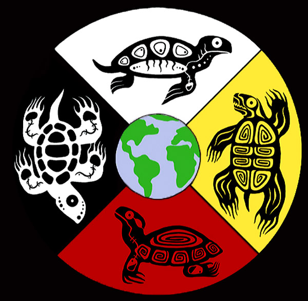

Turtle Island
Turtle Island is the whole world!
Treaty 13 Territory
Toronto is in the “Dish With One Spoon Territory.” The Dish With One Spoon is a treaty between the Anishinaabe, Mississaugas and Haudenosaunee that bound them to share the territory and protect the land. Subsequent Indigenous Nations and peoples, Europeans and all newcomers, have been invited into this treaty in the spirit of peace, friendship and respect.
The “Dish” or sometimes it is called the “Bowl” represents what is now southern Ontario (from the Great Lakes to Quebec and from Lake Simcoe into the U.S.). * We all eat out of the Dish – all of us that share this territory – with only one spoon. That means we have to share the responsibility of ensuring the dish is never empty; which includes, taking care of the land and the creatures we share it with. Importantly, there are no knives at the table, representing that we must keep the peace.
Turtle Island is the whole world!
We acknowledge the land we are meeting on is the traditional territory of many nations including the Mississaugas of the Credit, the Anishnabeg, the Chippewa, the Haudenosaunee and the Wendat peoples and is now home to many diverse First Nations, Inuit and Métis peoples. We also acknowledge that Toronto is covered by Treaty 13 with the Mississaugas of the Credit.
Pronunciation
The goal is to understand the First Nations tribes that lived here and still live here. To connect the past ancestors that inhabited the land that is now Canada and see the living reserves and first nations people that occupy this land today. And learn fun things about them along the way!
A collection of links to go through! I started trying to identify all the bands in my search to uncover the living relatives of the ancestors that negotiated the treaties. Better understanding of who Toronto is acknowledging.
“‘Mississauga’ is a colonial word,” she says. “Ojibway, Chippewa – it’s what the Dutch, the British, or the French called us. We’re Anishnabe.” That word translates as “human beings.”
Tkaronto = Mohawk word meaning “where there are trees standing in the water”
“people of the longhouse” commonly referred to as Iroquois or Six Nations
Originally a confederacy of five nations inhabiting the northern part of New York state, the Haudenosaunee consisted of the Seneca, Cayuga, Oneida, Onondaga and Mohawk. When the Tuscarora joined the confederacy early in the 18th century, it became known as the Six Nations
This is just going to be about related information I find along the way
Mary Two-Axe Earley was a Mohawk and Oneida women's rights activist from the reserve of Kahnawake in Quebec, Canada. After losing her legal Indian status due to marrying a non-status man, Two-Axe Earley advocated for changes to the Indian Act, which had promoted gender discrimination and stripped First Nations women of the right to participate in the political and cultural life of their home reserves.
(275 Spadina Road) Gete-Onigaming, is the Ojibway word for “old portage trail.” More than 13,000 years ago, Davenport Road followed the same line of the bluffs that formed the shoreline of mighty Lake Iroquois. The trail extended all the way west to Hamilton harbour and east to Kingston. Evidence of settlements along the route date back some 11,000 years when nomads fished and hunted caribou, mastodon and mammoth. In colonial times, the trail provided a link to the major trading routes of the Humber, Don and Rouge. The Toronto Islands provided a resting place and safe harbour for weary travellers and traders. Casa Loma at the top of Spadina sits on a former Mississauga council ground. Spadina comes from the Anishnabe term “Ishpaadina,” meaning “the clump of land you see out there,” a reference to the Toronto Islands, which are visible from here. The lands around the lake were home of five founding nations of the Haudenosaunee Confederacy (Mohawks, Oneidas, Onondagas, Cayugas and Senecas), who would later move into the Toronto area during the 17th century. But the construction of Fort York in 1793, which created a permanent military base in Tkaronto (then York), would make it a focus of economic activity in the area – and later – a flashpoint for war in 1812. Conventional wisdom is that colonists dominated the area. But there were barely 700 inhabitants in York. The Senecas, who controlled the trade routes along the Humber and Rouge, were being replaced in the region by Algonkian speakers from central Ontario, who would dominate the history of the region to the end of the 18th century. But the Algonkian Mississaugas, as they would come to be known, did little farming. Instead, they were hunter-gatherers, living in seasonal settlements, and catching salmon. A huge wave of British immigration following the American Revolutionary War would soon follow and change everything.
Hidden Tkaronto: 10 places connected to the city’s Indigenous history